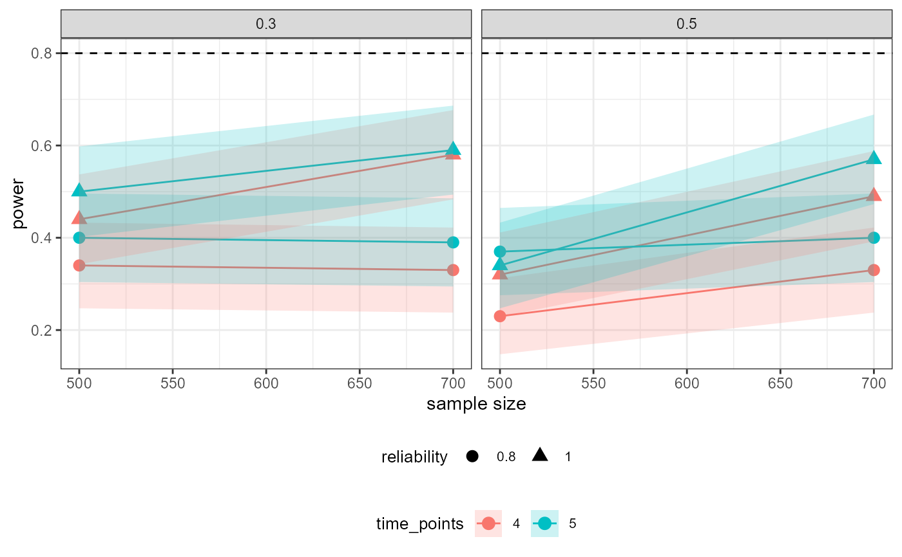
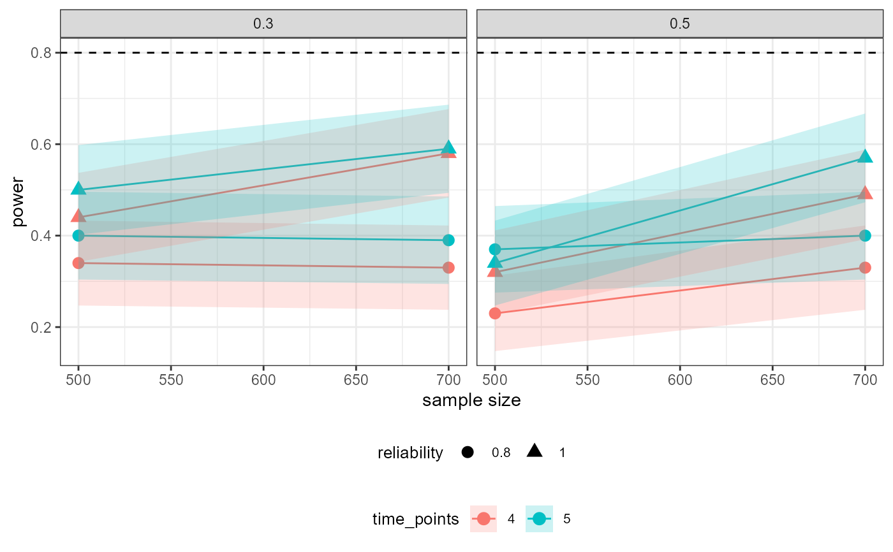

Visualizes (using ggplot2) the results from a powRICLPM analysis, for a specific parameter, across all experimental conditions. By default, sample size is plotted on the x-axis, power on the y-axis, and results are grouped by the number of time points and wrapped by the proportion of between-unit variance. Optionally, the y argument can be used to change the variable on the y-axis to other outcomes from the powRICLPM analysis.
Usage
# S3 method for powRICLPM
plot(x, y = "power", ..., parameter = NULL)Arguments
- x
A
powRICLPMobject.- y
(optional) A
characterstring, specifying which outcome is plotted on the y-axis (see "Details").- ...
(don't use)
- parameter
Character string of length denoting the parameter to visualize the results for.
Details
y-axis options
The following outcomes can be plotted on the y-axis:
average: The average estimate.MSE: The mean square error.coverage: The coverage rateaccuracy: The average width of the confidence interval.SD: Standard deviation of parameter estimates.SEAvg: Average standard error.bias: The absolute difference between the average estimate and population value.
See also
give: Extract information (e.g., performance measures) for a specific parameter, across all experimental conditions. This function is used internally inplot.powRICLPM.
Examples
# \dontshow{
load(system.file("extdata", "out_preliminary.Rds", package = "powRICLPM"))
# }
# Visualize power for "wB2~wA1" across simulation conditions
plot(out_preliminary, parameter = "wB2~wA1")
 # Visualize bias for "wB2~wA1" across simulation conditions
plot(out_preliminary, y = "bias", parameter = "wB2~wA1")

# Visualize coverage rate for "wB2~wA1" across simulation conditions
plot(out_preliminary, y = "coverage", parameter = "wB2~wA1")
# Visualize bias for "wB2~wA1" across simulation conditions
plot(out_preliminary, y = "bias", parameter = "wB2~wA1")

# Visualize coverage rate for "wB2~wA1" across simulation conditions
plot(out_preliminary, y = "coverage", parameter = "wB2~wA1")
 # Visualize MSE for autoregressive effect across simulation conditions
plot(out_preliminary, y = "MSE", parameter = "wA2~wA1")
# Visualize MSE for autoregressive effect across simulation conditions
plot(out_preliminary, y = "MSE", parameter = "wA2~wA1")
 # Error: No parameter specified
try(plot(out_preliminary))
#> Error in check_parameter_given(parameter) : No `parameter` was specified:
#> ℹ `plot()` needs to know which specific parameter to create a plot for.
# Error: No parameter specified
try(plot(out_preliminary))
#> Error in check_parameter_given(parameter) : No `parameter` was specified:
#> ℹ `plot()` needs to know which specific parameter to create a plot for.